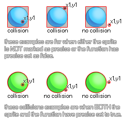

collision_point( x, y, obj, prec, notme );
| Argument | Description |
|---|---|
| x | The x coordinate of the point to check. |
| y | The y coordinate of the point to check. |
| obj | The object to check for instance collisions. |
| prec | Whether the check is based on pixel-perfect collisions (true = slow) or its bounding box in general (false = fast). |
| notme | Whether the calling instance, if relevant, should be excluded (true) or not (false). |
Returns: Instance id or noone
Collision point checks the point specified by the arguments
x1,y1 for a collision with any instance of the object
specified by the argument "obj". this check can be either precise
or not, but for precise collisions to be enabled, the object or
instance that you are checking for must also have precise
collisions enabled for their sprite. If not, the default check is
based on bounding boxes. The following image illustrates how this
works:

Remember, for precise collisions to be considered both
the object sprite and the collision function must have precise
marked as on. It should also be noted that the return value of the
function can be the id of any one of the instances
considered to be in collision, so if three instance overlap at that
point, any one of their ids could be the return value of the
function.
if collision_point(x, y, obj_Cursor, false,
true)
{
Score += 10S;
}
Here we are checking the point at the position of the object that has the code for the object "obj_Cursor". If there is one, then we add 10 onto the score variable.